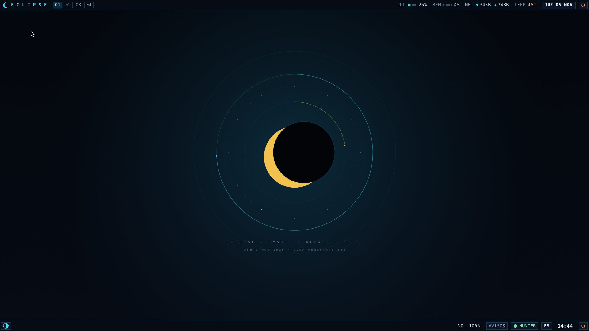
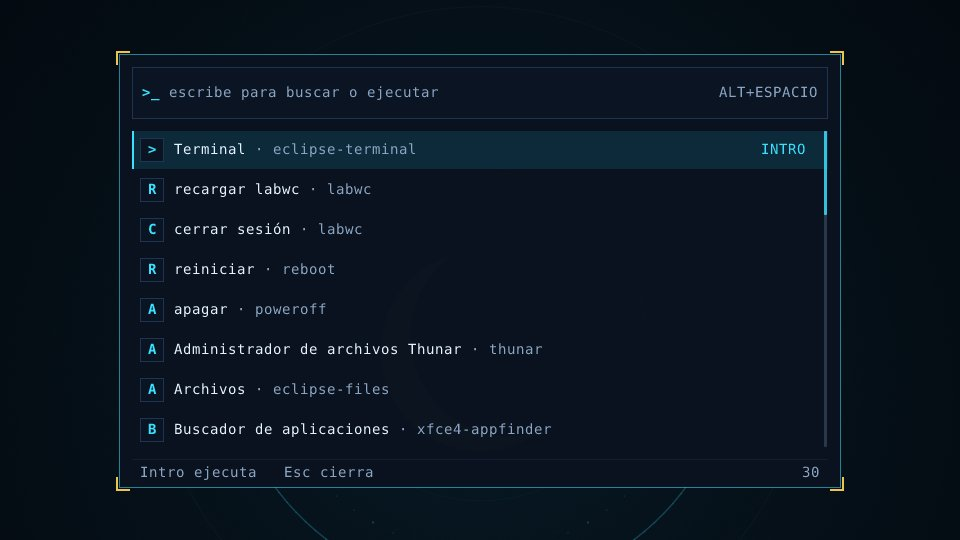
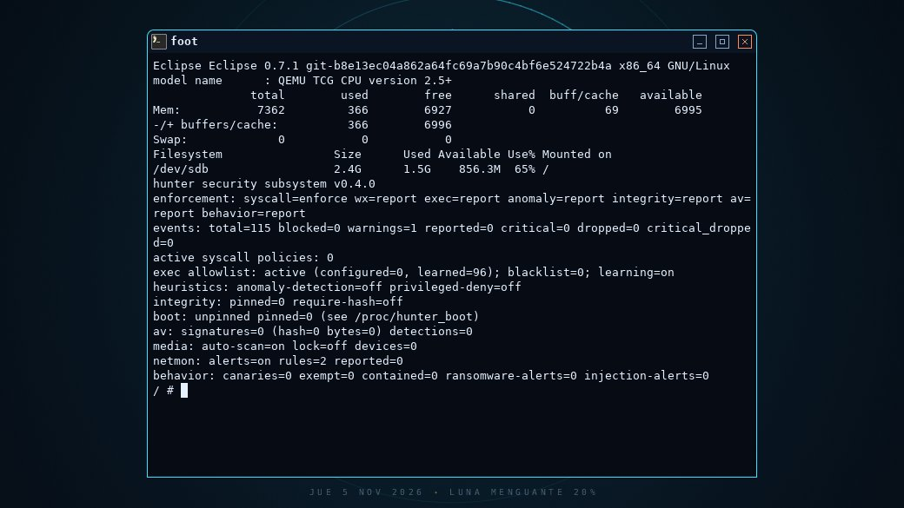
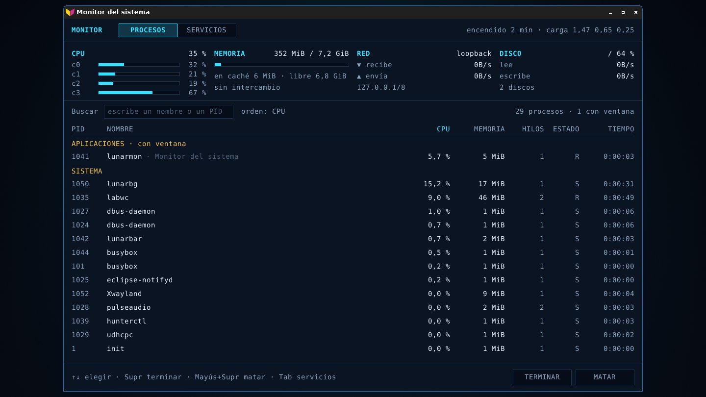
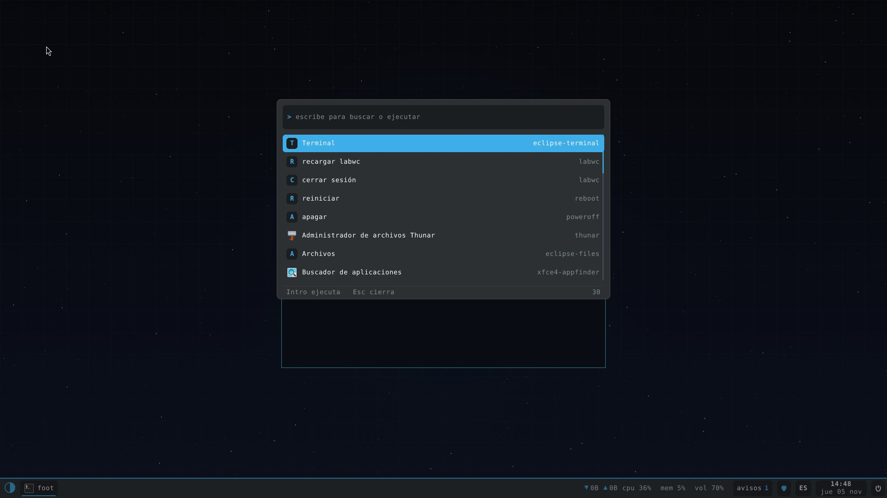
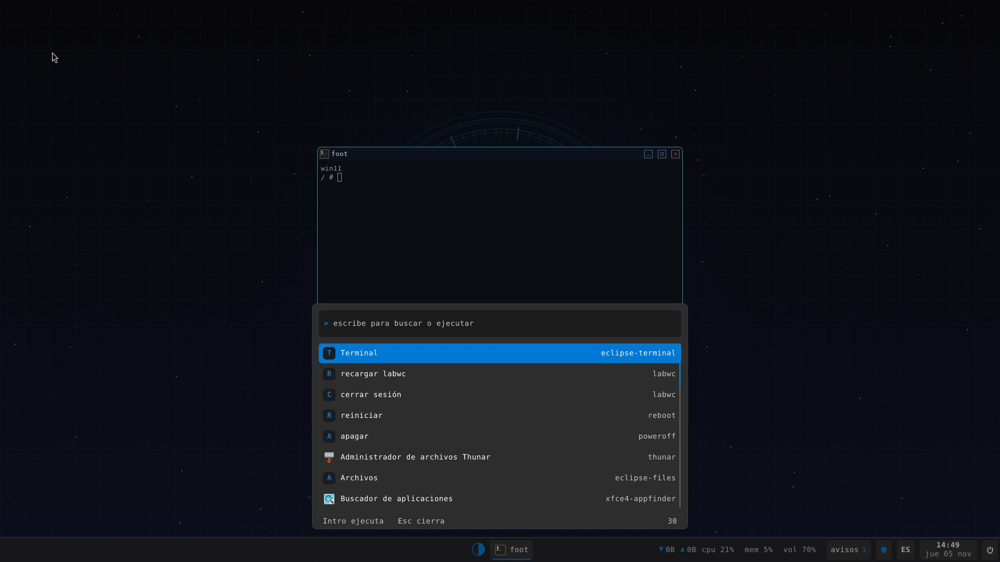
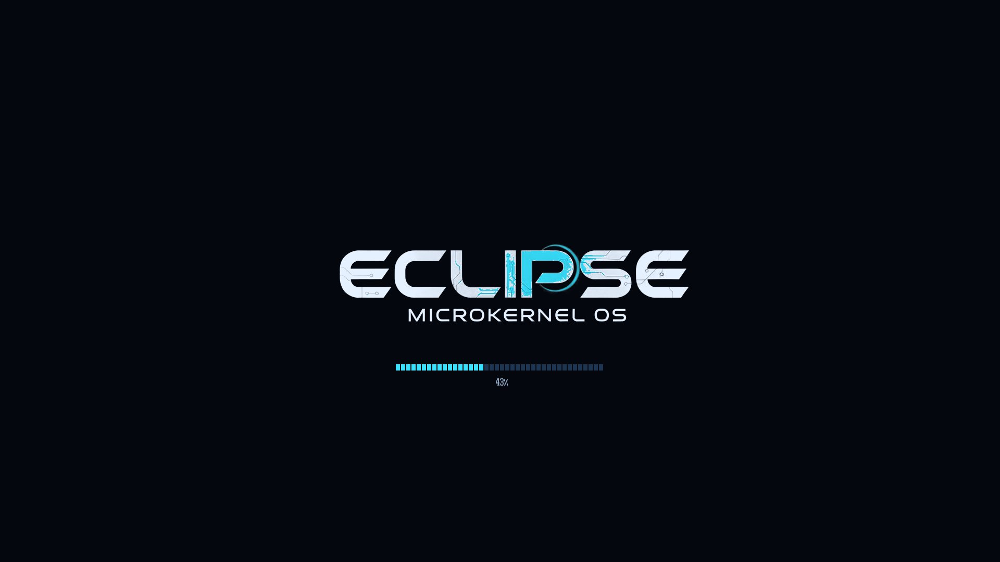

🦀
Safe by design
The kernel is written in Rust: no buffer overflows or dangling pointers at the heart of the system. It is a reimplementation of the Zircon microkernel.
A kernel of its own, written in safe Rust, that speaks Linux. Run your programs without recompiling them, on a desktop designed from scratch.

A real screenshot of Eclipse OS running in QEMU.
A modern microkernel that doesn't make you give up the software you already use.
The kernel is written in Rust: no buffer overflows or dangling pointers at the heart of the system. It is a reimplementation of the Zircon microkernel.
It implements the Linux system calls following Linux's own documentation: BusyBox, Mesa, foot or labwc, built for Linux, work as they are.
A Wayland session with labwc and native pieces: the animated lunarbg wallpaper, the lunarbar panel and a quick launcher.
hunter lives inside the kernel: it enforces LSM-style policies, watches W^X and detects anomalous behaviour.
Every boot stage is timed, from the firmware to eclipse-init. What isn't measured can't be improved.
Its own AHCI, NVMe, e1000e, USB and sound drivers; DRM/KMS graphics and an installer that puts it on your disk.
Real screenshots of Eclipse OS 0.7.1, built from the current code and booted in QEMU. Pick a tab.






The lunarbg wallpaper draws an eclipse in real time with the actual time, date and phase of the Moon. At the top, lunarbar with the four workspaces, CPU, memory, network, temperature and calendar. At the bottom, tasks, volume, notifications and hunter's shield.
Press Alt+Space, type and run. Apps, settings, restart and shutdown, all in the same place.
uname says Eclipse, the root lives on EclipseFS, its own file system, and /proc/hunter shows live what the kernel is watching.
Ctrl+Shift+Esc opens lunarmon: per-core load, memory, network, disk, processes and boot services. And if a program tries to reach the network without permission, hunter asks you in a notification.
With eclipse-look kde the panel and launcher take on Plasma's Breeze colours. The pieces are the same; only the skin changes.
eclipse-look win11 centres the taskbar and turns the launcher into a translucent Start menu.
The rboot loader draws the logo and the first half of the progress bar; the kernel finishes it. Every stretch is timed.
Its own kernel below and Linux software above, layer by layer.
A virtual machine is all you need. If you like it, the installer puts it on your disk.
Pick desktop or minimal, for x86_64 or arm64, in Downloads.
eclipse-desktop-x86_64.iso.gz
It needs UEFI firmware (OVMF) and at least 4 GB of memory.
gunzip eclipse-desktop-x86_64.iso.gz qemu-system-x86_64 -machine q35 \ -m 8G -smp 4 -vga virtio \ -drive if=pflash,format=raw,readonly=on,file=OVMF.fd \ -cdrom eclipse-desktop-x86_64.iso
From the live console, the installer walks you through the rest.
# with a SATA or NVMe disk attached
install-eclipse
The whole system, from the kernel to the desktop, comes from a single repository.